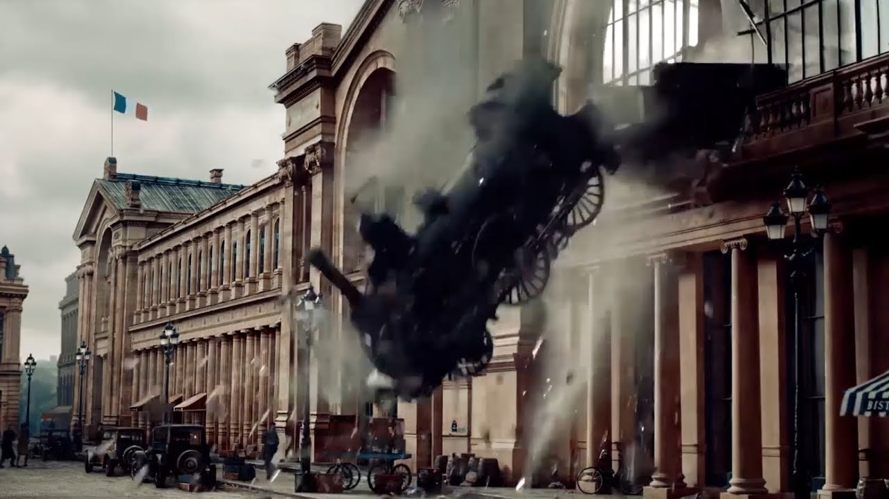

THE MONTPARNASSE DERAILMENT
The Afternoon of October 22, 1895. The Granville Paris Express was running several minutes late as it approached the Gare Montparnasse terminus. To make up for lost time, the driver maintained a high speed of approximately 25 to 37 miles per hour. As the train entered the station, the driver attempted to apply the Westinghouse air brakes a relatively new technology at the time. However, the brakes failed to engage. The tragedy occurred because the conductor, distracted by paperwork, failed to apply the emergency handbrake in time. The steam locomotive slammed through the heavy buffer stops, crossed the 100-foot station concourse, and crashed through the two-foot-thick masonry wall of the station. Because the tracks were on an elevated second story, the engine plummeted 30 feet onto the Place de Rennes below. Miraculously, all passengers on board survived with only minor injuries. The only fatality was Marie-Augustine Aguilard, a newsstand vendor on the street below who was crushed by falling masonry.

The Strategic Response: From Public Spectacle to Safety Redundancy The immediate strategy by the railway company was Public Damage Control. The locomotive was left hanging from the wall for four days because the sheer weight made it impossible to move with 19th-century equipment, turning the disaster into a macabre tourist attraction.
The Braking Strategy: This accident served as a global case study for "Redundancy." The strategy shifted from relying on a single braking system to mandatory multi-point braking protocols, ensuring that if the air brakes failed, manual or vacuum systems had to be engaged well before entering a station’s perimeter.
The Buffer Goal: Civil engineers began implementing "Hydraulic Buffers" and longer "Drag Zones" at the end of terminal tracks. The strategy moved from a "Hard Stop" (which failed at Montparnasse) to "Energy Dissipation," designed to absorb the momentum of a runaway train safely.
Key Facts
Date: October 22, 1895
Location: Gare Montparnasse, Paris, France
Casualties: 1 death (a newsstand vendor on the street)
Cause: Mechanical and Human Error (Air brake failure and driver’s excessive speed, followed by a failure to apply the emergency handbrake)
The Montparnasse wreck is a reminder that the strategy of "Recovering Lost Time" is often the catalyst for catastrophe. It teaches us that human distraction, combined with a single point of mechanical failure, can lead to physics-defying accidents. While the photograph of the hanging train is famous, the strategic shift in railway safety it forced is the true legacy of the event.